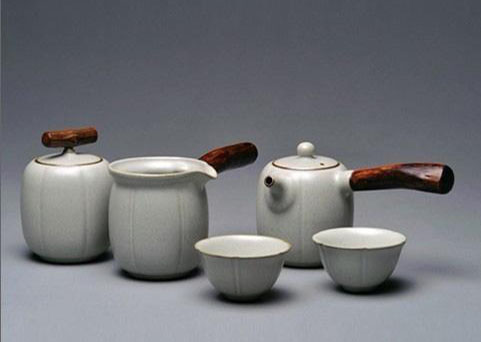

产品设计（非师范）专业（本科）日用瓷设计方向
（1）培养目标：
本专业培养拥护党的基本路线，德、智、体、美、劳等全面发展，培养学生具有良好的职业道德和诚信敬业精神，掌握陶瓷产品设计及制作的工艺理论知识和专业技能。培养学生为技术应用能力强，能胜任陶瓷生产企业岗位中的陶瓷产品设计与制作、日用瓷设计、陶瓷装饰、陶艺制作等一线岗位人才要求。并具有专业基础理论知识、良好的职业素养的；具有良好的沟通能力和组织能力，能适应地方经济建设和社会发展需要，培养既能扎根基层又具有先进理念与开阔视野、既具有就业竞争力又具有较强发展后劲的 “人文素养高、实践能力强、善创新且具工匠精神”的应用型人才。
（2）主要课程：
产品设计原理与方法、中外陶瓷史及作品鉴赏、陶瓷工艺学、陶瓷工艺材料配置与应用、电脑图形设计-CorelDraw、电脑图形设计-Photoshop、电脑效果图3DMAX、陶艺基础、现代陶艺、雕塑基础、设计素描、设计速写、陶瓷材料与工艺技术、平面构成、色彩构成、立体构成。国画基础、釉上彩装饰、青花、花纸设计与制作、陶瓷首饰设计与制作、AutoCAD、陶瓷造型基础设计、模具制作、陶瓷成型综合实训、建瓷、卫浴设计、日用瓷设计Ⅰ（陈设瓷、卫浴六件套）、陶瓷与其他材料、日用瓷设计Ⅱ（茶咖具、餐具）、计算机辅助设计与数控成型、陶瓷装饰设计、陶瓷装饰综合实训、专业见习、毕业实习、毕业设计与论文。
（3）就业方向：
可在陶瓷企业从事日用陶瓷设计、电脑图形设计、陶瓷装饰设计与制作、陶艺制作与培训、陶瓷模具制作、手拉壶制作相关产业从事生产和管理等一线岗位工作。